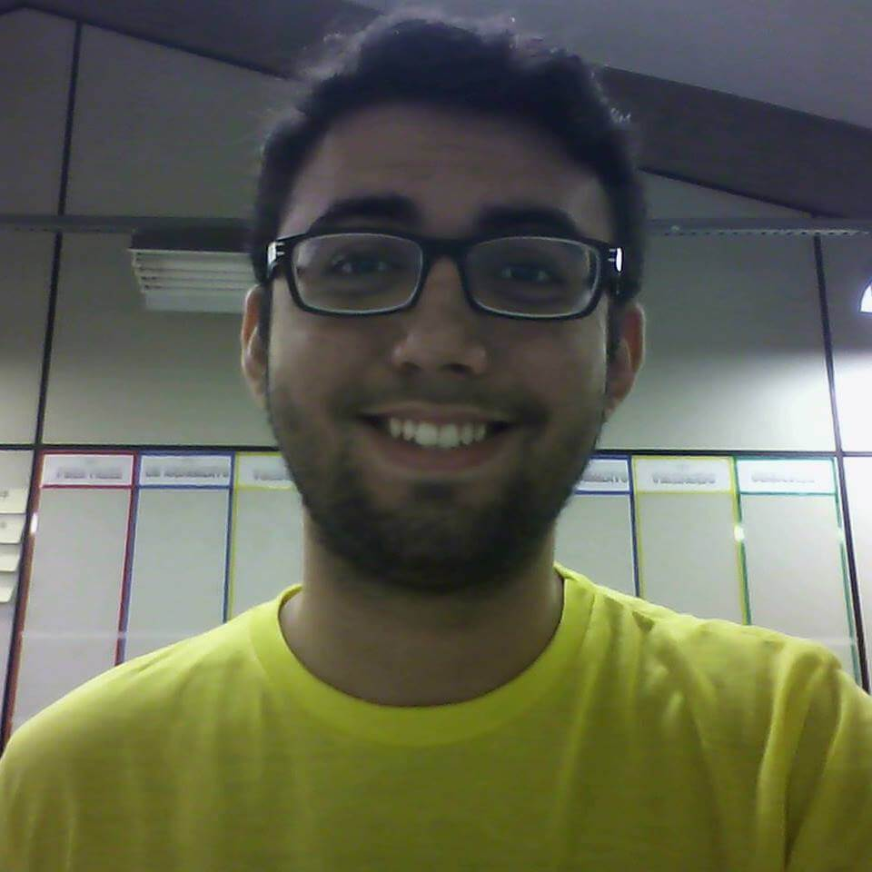
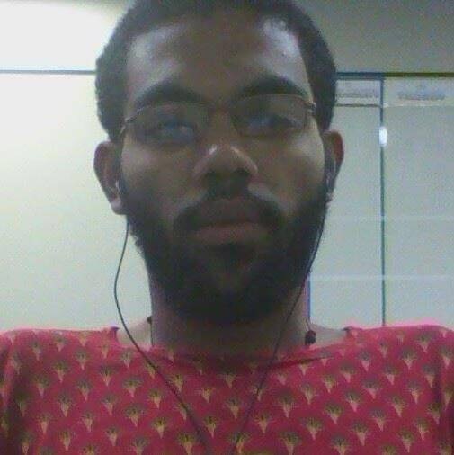
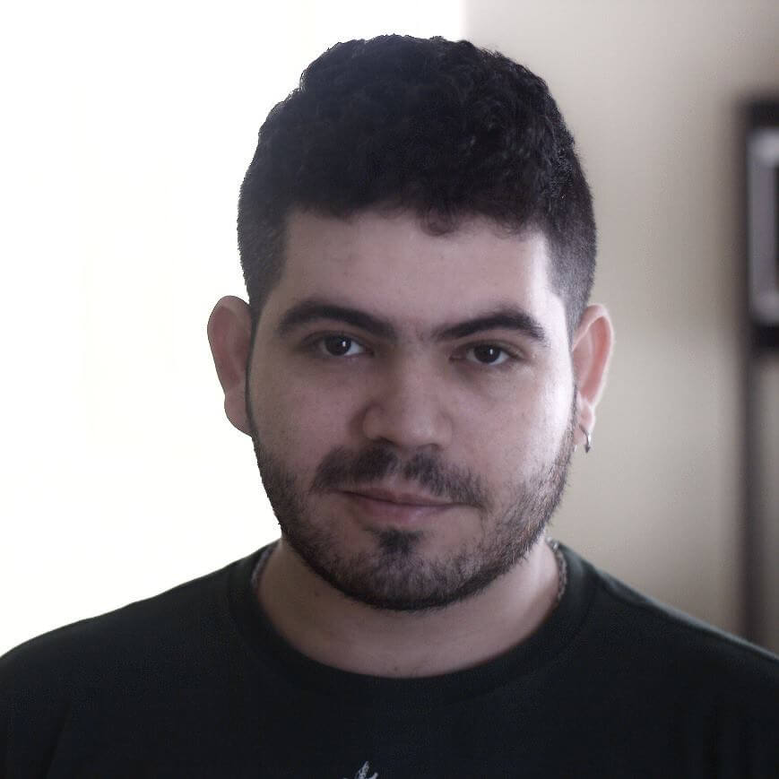

Nossa equipe
Douglas Gabriel
Diretor Presidente

Rafael Tavares
Diretor Vice-Presidente

Jair Anderson
Diretor Administrativo-Financeiro
Priscila Gouveia
Diretora de Recursos Humanos
Emanuel Batista
Diretor de Projetos
Michelle Oliveira
Diretora de Qualidade

Rodrigo Oliveira
Gerente de Marketing
